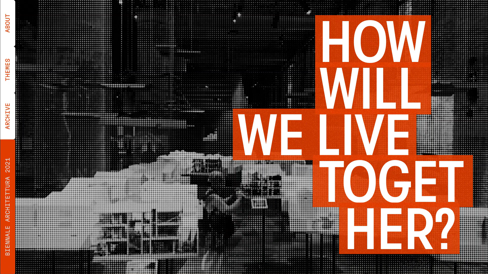
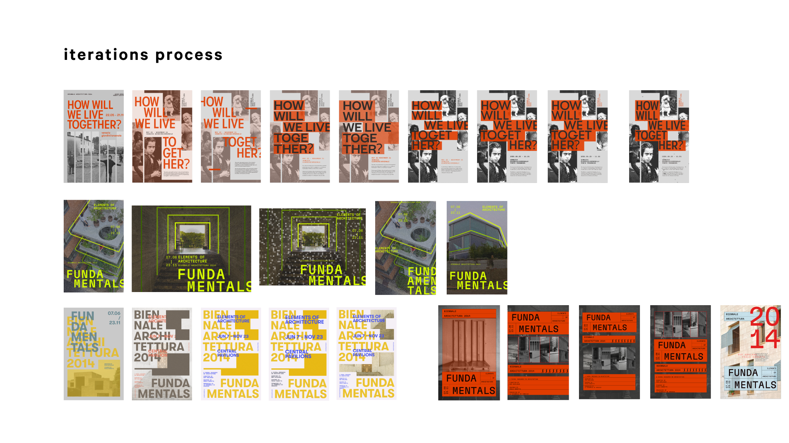
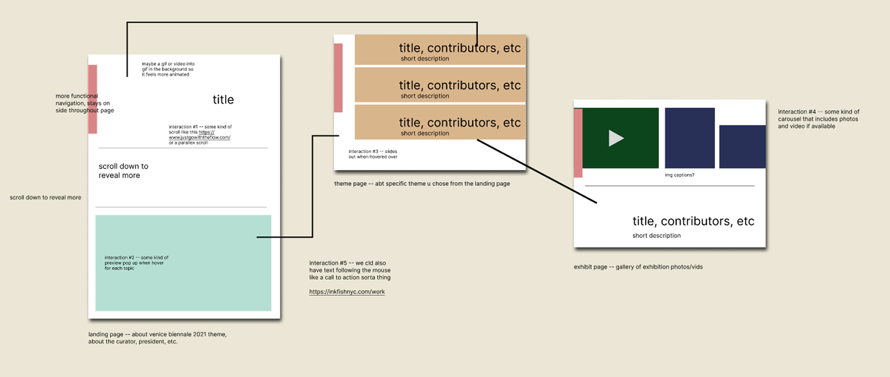
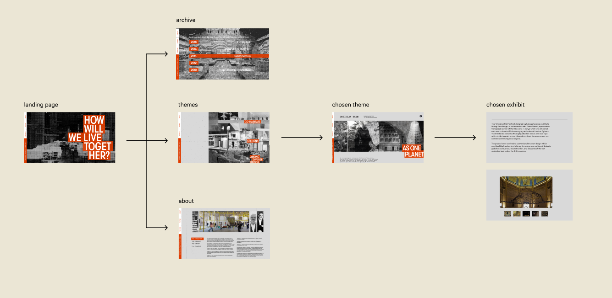
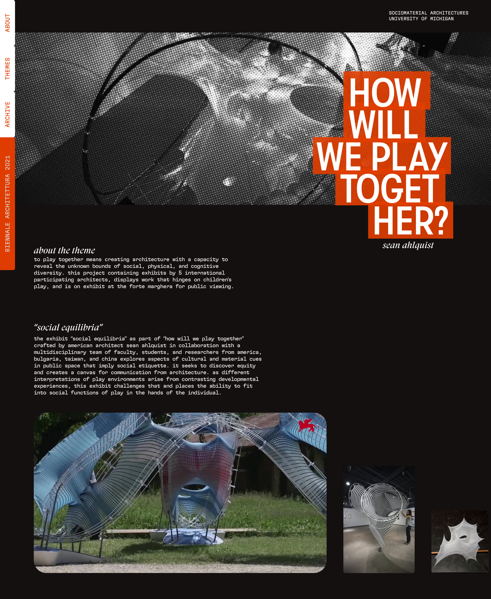

Course Project
5 weeks (May 2024 to June 2024)
Figma, Graphic/Visual design, UI/UX design, Creating wireframes, Prototyping interactions, Slides design, Public speaking
Zainab S., Daffodil H., Lily I., Colvin W., Kirsten L.
The Venice Biennale Microsite consisted of ~5 weeks of creating graphical and visual design iterations and designing and prototyping a microsite in Figma. The final product was created for exploring and learning about the Venice Biennale of Architecture 2021 exhibition for Simon Fraser University's IAT235 Information Design course. The team consisted of Zainab, Daffodil, Lily, Colvin, and me.
The project began with experimenting and iterating a variety of graphic and visual explorations to represent the chosen client. In my team of 5, we split the work of ideation evenly. Then, with our favourite ideas, we created mock-ups of real-life uses of our idea that allowed us to finalize the aesthetic and style we wanted to continue working with in our microsite. My individual work was mostly with the microsite itself. My tasks involved wireframing sketches, researching relevant website interactions that we could take inspiration from, and learning to prototype the website interactions using Figma.



The biggest issue for me arose during the prototyping stage, when we needed to put all of my ideas into Figma. Although I came up with many interactions, there were many that could not be done using the prototyping tools provided by Figma. This issue was especially bad when it came to the carousel interaction needed for each exhibition.
We decided to change the original idea for each exhibit's photo gallery and replaced it with this new gallery that enlarges on image in the center than a wonky carousel. Throughout the site there were many instances of needing to abandon an old, difficult idea for a new one. This was not only suitable while limited to the tools in Figma but also helped us come up with more visually interesting ideas.

From this project, not only had I gained many skills in Figma from creating flows to creating interactions with them, but I also learned the importance of researching for inspiration and testing out what works and does not work for my own projects, always being sure to go into a project with an open mind in case my initial ideas do not work out. After seeing so many of my original ideas change during and after the implementation process, I came to learn the importance of flexibility in a design setting.